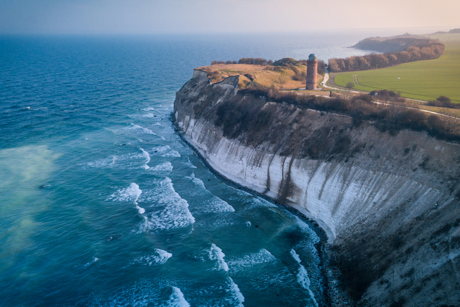

Klimat
W Niemczech panuje klimat umiarkowany z chłodnymi pochmurnymi i mokrymi zimami i latami, na południu występuje fen. Większość terenu Niemiec leży w strefie umiarkowanej ciepłej, gdzie dominują wilgotne wiatry zachodnie. Na północy panuje klimat oceaniczny z całorocznymi opadami. Zimy są stosunkowo łagodne, a lata dość ciepłe. Na wschodzie widać przejawy klimatu kontynentalnego. Zimy bywają bardzo zimne, a lata bardzo ciepłe. W centralnej części kraju, a także na południu klimat wykazuje cechy przejściowe, zarówno oceaniczne, jak i kontynentalne. Zimy są tu łagodne, a lata chłodne, chociaż temperatury mogą przekroczyć +30 °C. Najcieplejszym regionem Niemiec jest południowo-zachodni zakątek kraju: Deutsche Weinstraße i Nizina Górnoreńska. Tutejsze lata mogą być bardzo ciepłe przez długi okres. Czasami minimalna temperatura nie spada poniżej +20 °C, co jest rzadkim zjawiskiem w pozostałej części kraju. Przeważają wiatry zachodnie i południowo-zachodnie. Na Wyżynie Bawarskiej w miesiącach wiosennych i jesiennych wieją ciepłe i suche feny. Występują zjawiska ekstremalne takie jak letnie i wiosenne burze.
Ostatnie lata były bardzo ciepłe i charakteryzowały się długimi okresami suszy i ekstremalnymi warunkami pogodowymi, takimi jak burze i ulewne deszcze. Lata w 2003, 2018 i 2019 roku były najcieplejsze od początku pomiarów. Średnioroczna temperatura powietrza wzrosła o 1,5 °C od 1881 do 2018 r. W ostatnich dziesięcioleciach w szczególności znacznie wzrosła liczba upalnych dni (> 30 °C). Miesiące, w których poziom wód gruntowych jest poniżej średniej, stają się znacznie częstsze. W miesiącach letnich rzeki zawierają coraz mniej wody.

Wyspa Rugia na Morzu Bałtyckim